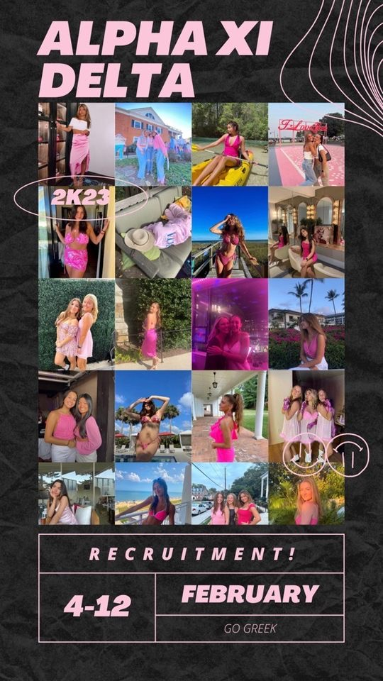

Infographic Work
Chicago Crime Infographic
Graphic

A website I coded to show crime data in Chicago.
This is a sorority graphic I designed to help their social media team publicize an event.
Video Work
Silent Story News Package
A package dedicated to commuters’ struggles on campus at UMD.
UMD Farmer's Market News Package
This is a news package about the UMD Farmer’s Market after the worst of COVID-19.
Prept' To Go Promotional Video
A short feature on a new student run food business on UMD campus, titled “Prept’ To Go.” This is a promotional video published on Spoon University Magazine.
Jewelry Business News Package
An interview feature package about a student-run jewelry business titled '“Itty Bitty Beads,” with a focus on natural sound elements.